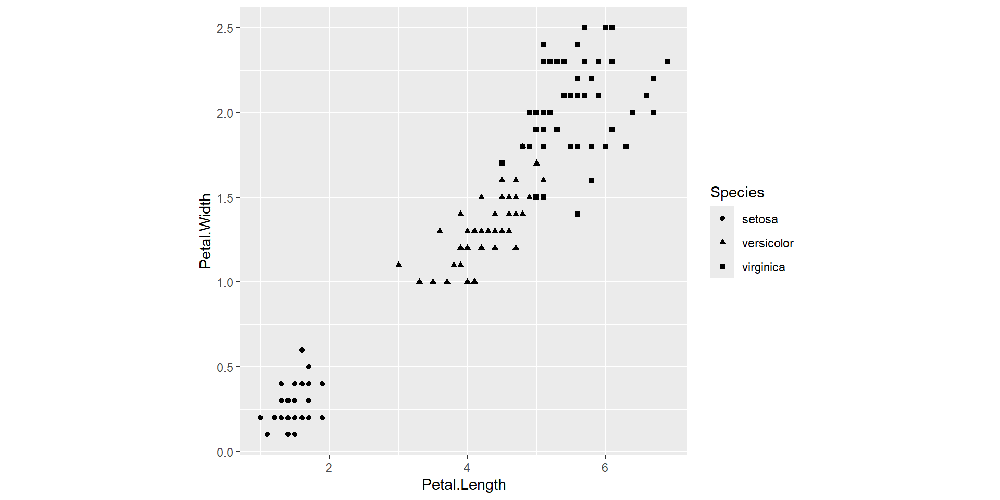
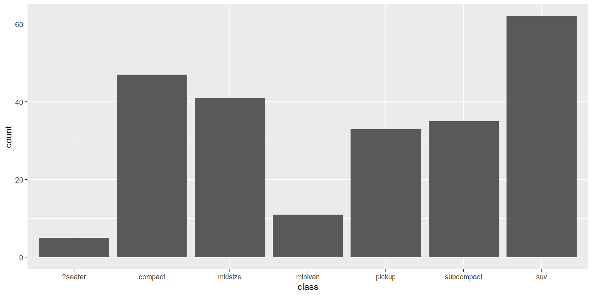

Gestalt Principles of Visual Perception
Proximity
We perceive objects close to each other as belonging to a group.

Similarity
Our brain group objects that share the same colour, shape, and direction
Enclosure
We perceive objects as belonging to a group when they are enclosed in a way that creates a boundary or border around them.
Closure
Our brains tend to complete missing parts in the picture.
Connectedness
We perceive objects connected to each other as a single group.

Continuity
Humans tendency is to see shapes as continuous to the greatest degree possible. The human eye/brain follows lines, curves or a sequence of shapes to create pathways.

Simplicity
The law of simplicity indicates that our mind perceives everything in its simplest form.
Common fate
When objects move in the same direction or at a similar pace, our brains automatically group them together. (eg: a flock of birds)